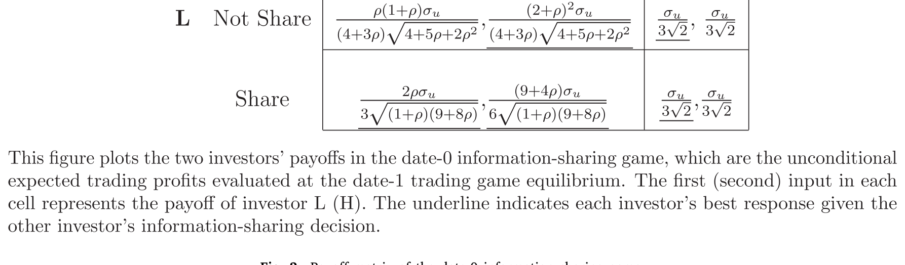
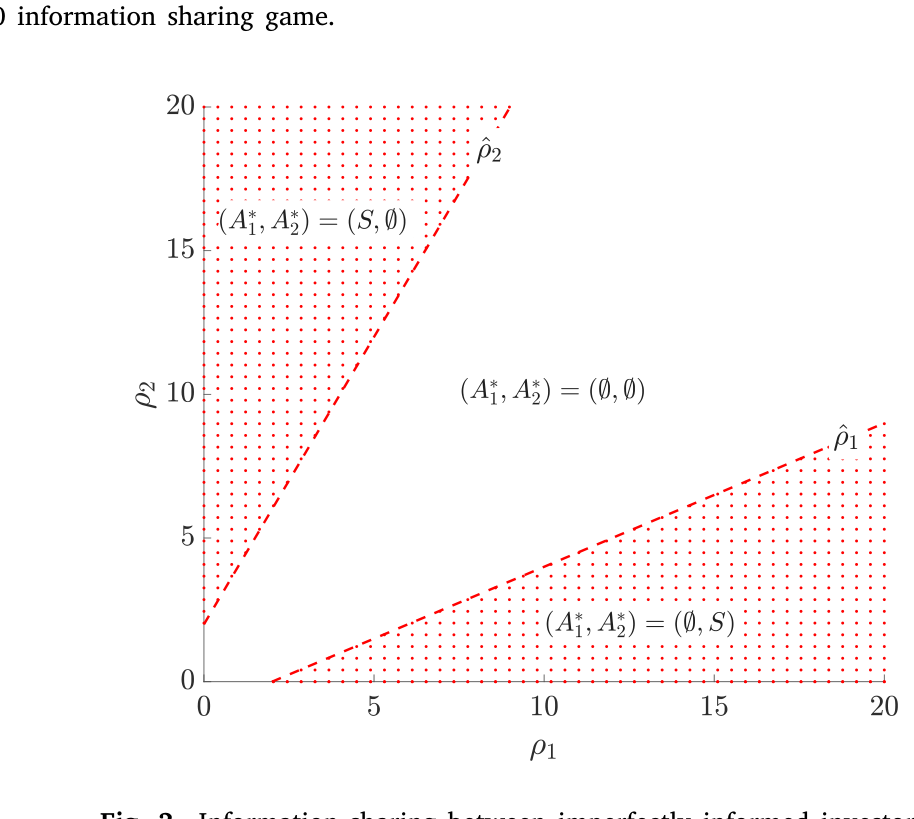
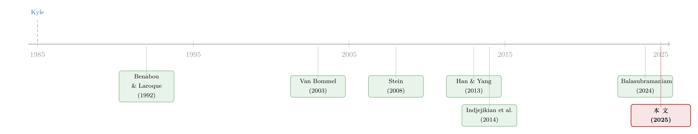

谁把信息让给了对手？——一个 Kyle 模型里「越无知越愿意分享」的反转
本文读的是 Goldstein, Xiong & Yang (2025, Journal of Financial Economics)：在一个 Kyle (1985) 框架里让两个知情投资者「开口前先决定要不要把私有信息告诉对方」，结论出人意料——主动分享信息的，恰恰是那个信息更差的人；而更糟的是，接收信息的「聪明人」事后用了这条信息赚了钱，事前却反而被这次分享变穷了。信息流向，与信息效率背道而驰。
1 一个被默认、却从没被追问的方向
金融市场里，信息是会「走路」的。Shiller and Pound (1989) 的调查里，大多数机构投资者把自己最近的交易归因于和同行的讨论；Hong et al. (2005)、Pool et al. (2015) 则用基金经理的持仓和交易，实打实地刻画了资产管理圈里那种「口耳相传」的本地社交效应。到了今天，这种交流换了张皮——Twitter、Seeking Alpha、StockTwits、Reddit，还有 SumZero、Value Investors Club 这样的私密社区——但本质没变：人们仍然在彼此交换「我觉得这只票怎么样」。Shiller (2015) 干脆下了个判断：「观点的口耳相传，是日内乃至小时级别股价波动的一个重要推手。」
证据多得几乎不容置疑。可奇怪的是，理论却一直在回避一个最基本的问题。
过去的模型，要么把「信息会被分享」当成既定前提，然后去研究它的后果（Duffie and Manso, 2007；Colla and Mele, 2010；Han and Yang, 2013）；要么承认分享需要一个理由，于是给出各种动机——Benabou and Laroque (1992) 说内幕者借此操纵市场，Stein (2008) 说我把半成品的想法抛出去、指望对方接着把它打磨完再扔回来，Ljungqvist and Qian (2016) 说带着空头仓位的套利者会主动「报料」以加速价格修正，Van Bommel (2003)、Indjejikian et al. (2014) 则说往信息里掺噪声能让自己相对跟风者占便宜。
但你有没有发现，所有这些故事，都没有回答「谁，会把信息分享给谁」。
这正是本文自认的「填空」之处：它不预设信息从知情者流向不知情者，也不预设双方对称地互换，而是把分享的方向本身当成一个待求解的内生变量。一个最朴素、却几乎没人正面问过的问题——在金融市场里，更愿意开口的，到底是更懂的人，还是更不懂的人？
接着，一个自然的问题是：要回答这个，你得有一个能让「分享」成为一种理性选择的舞台。
2 舞台：一个加了「开口」前置步骤的 Kyle 模型
作者把经典的 Kyle (1985) 拿来，前面接了一个「要不要说」的环节。三个日期 \(t = 0, 1, 2\)。
市场上有一只风险资产，date-2 的清算价值为
$$\tilde{v} \sim N(0, 1).$$
参与者三类：一个竞争性做市商、一群噪声交易者、两个风险中性的理性投资者。两个理性投资者一个叫 H、一个叫 L，区别在信息质量：基准模型里，H 完美地观测到 \(\tilde{v}\)；而 L 只能看到一个带噪声的私有信号 (private signal)
$$\tilde{y} = \tilde{v} + \tilde{e}, \qquad \tilde{e} \sim N(0, \rho^{-1}).$$
参数 \(\rho \in (0, \infty)\) 决定 L 信息的精度——\(\rho\) 越大，L 的信号越干净。噪声交易者递交随机市价单 \(\tilde{u} \sim N(0, \sigma_u^2)\)，与一切独立。做市商看到的总订单流 (order flow) 是
$$\tilde{\omega} = \tilde{x}_H + \tilde{x}_L + \tilde{u},$$
并按弱式有效定价（weak market-efficiency rule）把价格定在条件期望上：
$$\tilde{p} = E(\tilde{v} \mid \tilde{\omega}).$$
关键的新东西在 \(t = 0\)：H 和 L 同时决定要不要把自己的私有信息分享给对方，记 \(A_i \in \{S, \varnothing\}\)，\(A_i = S\) 表示完全分享。比如 L 选了 \(A_L = S\)，那么到了 date 1，H 就能原样看到 \(\tilde{y}\)。这些 date-0 的决定在 date 1 开始时成为共同知识，于是后面可以用逆向归纳法 (backward induction) 求解。
到了 date 1，每个投资者递交市价单 \(\tilde{x}_i\)，最大化自己的期望交易利润：
$$E\!\left[\tilde{x}_i (\tilde{v} - \tilde{p}) \mid \mathcal{I}_i\right],$$
\(\mathcal{I}_i\) 是 \(i\) 的信息集。注意一个细节：投资者下单时看不到价格，只能递交市价单——这恰恰是「想要打听别人在干什么」的动机所在。如果像 Kyle (1989) 那样允许投资者基于均衡价格交易，他们就等于知道了成交价，也就不必再去揣测同行的动作，本文的机制会被直接关掉。
3 先看「没人分享」的基准，再看「分享」如何改变一切
子博弈一：谁都不说（\(A_L = A_H = \varnothing\)）。此时 \(\mathcal{I}_L = \{\tilde{y}\}\)、\(\mathcal{I}_H = \{\tilde{v}\}\)，这就是带两个异质知情者的经典 Kyle。猜测线性策略 \(\tilde{x}_L = \beta_y \tilde{y}\)、\(\tilde{x}_H = \alpha_v \tilde{v}\)、\(\tilde{p} = \lambda \tilde{\omega}\)，对各自的最优化问题求一阶条件，得到
$$\alpha_v = \frac{1 - \lambda \beta_y}{2\lambda}, \qquad \beta_y = \frac{(1 - \lambda \alpha_v)\,\rho}{2\lambda (1 + \rho)}.$$
这两条式子很「Kyle」：每个人的进取程度，都被价格冲击 \(\lambda\) 摁着——\(\lambda\) 越大，下单越收敛。
然后，真正关键的一步来了。子博弈：L 把 \(\tilde{y}\) 分享给 H（\(A_L = S\)，\(A_H = \varnothing\)）。现在 H 的信息集变成 \(\mathcal{I}_H = \{\tilde{v}, \tilde{y}\}\)。H 本就完美知道 \(\tilde{v}\)，那么多出来的 \(\tilde{y}\) 对他有什么用？
把 H 的最优化问题写出来。L 的订单是 \(\tilde{x}_L = \beta_y \tilde{y}\)，H 知道 \(\tilde{y}\)，于是
$$E\!\left[\tilde{x}_H(\tilde{v} - \tilde{p}) \mid \tilde{v}, \tilde{y}\right] = \tilde{x}_H\!\left[\tilde{v} - \lambda\!\left(\tilde{x}_H + \beta_y \tilde{y}\right)\right].$$
对 \(\tilde{x}_H\) 求一阶条件 \(\tilde{v} - \lambda(2\tilde{x}_H + \beta_y \tilde{y}) = 0\)，解出 H 的最优下单：
这条方程，是整篇论文的「题眼」。
第一项 \(\tilde{v}/(2\lambda)\) 是「预测基本面效应」（forecasting-fundamental effect）：H 拿着真实的 \(\tilde{v}\)，照常下注。但 H 早就知道 \(\tilde{v}\)，这条信息没给他添一分基本面知识——所以在基准模型里，对 H 而言这一效应等于零。
真正起作用的是第二项 \(-\frac{\beta_y}{2}\tilde{y}\)，「对错误交易效应」（trading-against-error effect）。把 \(\tilde{y} = \tilde{v} + \tilde{e}\) 拆开，这一项里含着 \(-\frac{\beta_y}{2}\tilde{e}\)：L 会按 \(\beta_y \tilde{y}\) 下单，其中 \(\beta_y \tilde{e}\) 是纯粹由 L 信号噪声驱动的「错误仓位」。H 一旦知道了 \(\tilde{e}\)，就能精准地反着 L 的错误下注。在做市商眼里，L 的这部分错误订单和噪声交易者一样是「dumb money」，但它不是纯噪声，而是 L 信号里那个看得见、抓得住的误差项——而 H 把它抓住了。
于是反转的第一层出现了：L 主动把信号交给 H，等于邀请 H 来反着自己的错误交易。 这听上去像是引狼入室，可对 L 来说恰恰是好事——H 反向接走了 L 订单里的一部分，使得 L 自己的订单对价格的冲击变小了。L 因此可以更进取地在自己的信号上下注。送出信息，换来的是更低的价格冲击。
4 为什么是 L 开口、而 H 闭嘴？
把两种效应摆在一起，「谁分享」的答案就自己浮出来了。
判断「要不要分享」，要看接收方会怎么用这条信息，再看这对发送方意味着什么：
- 预测基本面效应让接收方更懂基本面、和发送方同向交易——这侵蚀了发送方的信息优势，所以它让分享变得不划算；
- 对错误交易效应让接收方去反向交易发送方订单里的噪声——这压低了发送方的价格冲击，所以它让分享变得划算。
现在分两边看。
如果 H 把 \(\tilde{v}\) 分享给 L：L 成了接收方，他的预测基本面效应被大大激活（L 从此知道了真实的 \(\tilde{v}\)），会更进取地同向交易，直接吃掉 H 的优势；而 L 这边由于 H 信息完美、没有误差可供反向交易，对错误交易效应是零。只有坏处，没有好处——所以 H 绝不分享。
如果 L 把 \(\tilde{y}\) 分享给 H：H 成了接收方，但他本就知道 \(\tilde{v}\)，预测基本面效应是零；剩下的全是对错误交易效应，而这恰好有利于发送方 L（降低了 L 的价格冲击）。只有好处——所以 L 一定分享。
这就是核心结论：均衡里 L 分享、H 不分享。信息从「更不知情者」流向「更知情者」，与信息效率的方向正好相反。 这和信息共享文献里通常的假设——信息从知情流向不知情、或双方对称互换——形成鲜明对照。
图 2 把 date-0 这个 \(2\times2\) 博弈的收益矩阵画了出来，「L 分享、H 不分享」是占优策略均衡。

Figure 2: Payoff matrix of the date-0 information sharing game
这个机制其实在更一般的情形下也站得住。把基准里「H 完美知情」这个简化去掉，让 H 也只有带噪声、但比 L 更精的信息（论文 Section 4.1，见图 3）：作者证明，只要 L 的信息足够不精确，「更知情者从不分享、更不知情者主动分享」的结论依然成立。两种效应的此消彼长，对 H 来说预测基本面那一项始终更重，对 L 来说对错误交易那一项始终更重——精度的高低，决定了天平倒向哪边。

Figure 3: Information sharing between imperfectly informed investors
5 真正的悖论：H 用了信息赚了钱，却被这次分享变穷了
到这里，故事还能再翻一层。
事后看（ex post），L 一旦把信息给了 H，两个人都从「H 反向交易错误」里获益：对 H，反向交易是个从「基本面价值与价格之差」里多赚一笔的机会；对 L，H 反着自己的信息交易，降低了自己的价格冲击。看起来皆大欢喜。
但事前看（ex ante），把所有间接效应都算进去，作者证明 H 反而被「L 向他分享」这件事弄得更糟了。
为什么？因为 L 的分享，不只改变了 H 的行为，还通过均衡反馈改变了 L 自己的交易策略和做市商的定价规则。具体说：分享之后价格对 L 的信息不再那么敏感，于是 L 更进取地下单；做市商看到知情交易增多（即便其中一部分被 H 不那么进取的交易抵消了），便把价格定得对总订单流更敏感——也就是 \(\lambda\) 变大。这两个变化都在伤害 H。事后那点正向的「直接好处」，扛不住事前这套间接效应的反噬。
H 的困境，本质是一个承诺（commitment）问题：信息一旦摆在面前，事后用它永远是最优的，所以 H 无法可信地承诺「我不听」。可正是「事后一定会用」这件事，让他事前更糟。作者在「多个 H 投资者」的扩展里把这点推得更彻底——即便 H 们有能力承诺不听，他们个体上也不会选择承诺，因为 H 之间存在一个协调问题（coordination problem），谁也不肯单方面闭上耳朵。
这种「明知会被反向交易、却管不住自己去用」的张力，和证券借贷里出借人一边收着利息、一边把自己的信息喂给借券的对手盘的逻辑神似（可参见《把信息卖给你的对手：证券借贷里那场无声的博弈》）。
6 对市场的总账：效率上升，流动性下降，成交量两可
跳出「谁赚谁亏」，作者进一步问：这种「由更不知情者发起」的分享，对市场总量意味着什么？把「无人分享」的经济和「均衡下有分享」的经济对比：
- 价格信息含量（市场效率）上升。虽然分享方是更差的投资者，但 L 在自己的信号上交易得更进取、H 又在反向交易噪声，两股力量合起来，把更多基本面信息注入了价格。
- 市场流动性下降。这是上一条的直接推论：基本面信息更多地进入价格，做市商的逆向选择担忧加重，于是 \(\lambda\) 上升、流动性变差。
- 成交量方向不定。分享后 L 的成交量上升，而 H 和做市商的成交量都下降。作者发现，当 L 的信息高度不精确时第一股力量占上风——因为此时分享让 L 的交易进取程度提升得最猛。
一个值得玩味的推论：信息分享让市场更「有效率」，却同时更「不流动」。效率和流动性，在这里是一对被同时往两个方向拉扯的孪生兄弟。
7 它能解释什么现实？从市场闲谈到社交媒体
作者花了笔墨把模型接回现实。两类现象正好对上：
其一是「市场闲谈」（market chatter）——投资者之间私下的相互交流，正是基准模型里「只分享给另一个投资者、做市商看不到」的设定。模型给出的独特预测是：在这种闲谈里，信息倾向于从更不知情的人流出。这与「金融市场里被分享的信息往往质量不高」这一观察吻合得相当好。
其二是社交媒体上日益增长的公开分享。这时做市商也能看到被分享的信息（论文 Section 4 的一个扩展，见图 5）：作者证明，如果做市商能完美解读这条公开信息，L 就不再分享了；反过来，如果做市商没法有效处理这条信息，L 是否愿意分享，取决于他自己的信息精度、以及 H 和做市商各自的「信号解读能力」。L 信息越不精、做市商解读越弱、H 越能有效消化——L 就越愿意公开开口。
这给「为什么社交媒体上最活跃发帖的，常常不是最懂的那批人」提供了一个干净的微观结构解释：不是因为他们更慷慨，而是因为对信息差的人来说，把信息抛出去、让更强的人替自己反向冲掉噪声、从而压低自己的价格冲击，本就是一笔划算的买卖。
8 文献脉络
把这条线索捋一遍，本文的位置就清楚了。
源头是 Kyle (1985)——它给了「知情交易、价格冲击、做市商定价」这套语言，是后面所有讨论的地基。随后，「投资者为什么要分享信息」分出了好几股解释：Benabou and Laroque (1992) 的市场操纵，Foucault and Lescourret (2003) 在不同信息类型的交易者间的分享，Van Bommel (2003) 往信息里掺噪声以占跟风者便宜，Stein (2008) 的「抛砖引玉」式对话，Indjejikian et al. (2014) 的理性信息泄露，Ljungqvist and Qian (2016) 借报料加速价格修正。还有一股是把分享当外生、研究其后果的：Han and Yang (2013) 的社交网络与资产价格、Colla and Mele (2010) 的关联交易。

但所有这些，都没正面问「谁分享给谁」。最接近的是同期的 Balasubramaniam (2024)：它说有显著分歧的竞争交易者会倾向于交换信息。两篇都指出「某种不对称」是分享发生的关键，但结论分道扬镳——在 Balasubramaniam (2024) 里，若均衡有分享，必是双向互换；而本文里信息只单向地从 L 流向 H。本文还把自己接到了「关于噪声交易的私有信息」这条线上（Ganguli and Yang, 2009；Marmora and Rytchkov, 2018；Farboodi and Veldkamp, 2020）——L 的错误订单在 H 眼里像「dumb money」，但它不是纯噪声，而是 L 信号里那个可被抓住的误差。本文站的位置，是第一个把分享的方向内生化、并预测「信息从更不知情者流出、且接收方事前反而变差」的模型。
9 评论与延伸（Q&A + 研究方向）
(a) 几个可能的疑问
Q：这和「talking your book」（为自己的仓位摇旗呐喊）是一回事吗？
不是，而且这正是本文的一个亮点。在 Schmidt (2019)、Pasquariello and Wang (2023) 这类「为自己的书叫卖」的解释里，分享者得先持有仓位或有短期动机；而本文里，L 在分享时还没有任何仓位——他是为了建仓才分享，靠的是让 H 反向交易来压低自己未来的价格冲击。机制完全不同。
Q：为什么是「更不知情者」分享，这不反直觉吗？
反直觉恰恰是卖点。关键在于两种效应的相对强弱：分享会激活接收方的「预测基本面效应」（侵蚀发送方优势）和「对错误交易效应」（压低发送方价格冲击）。对信息好的 H，前者主导，所以闭嘴；对信息差的 L，后者主导，所以开口。信息越差，越有「错误」值得别人替你反向冲掉。
Q：H 明知道事前会更糟，为什么不干脆「不听」？
因为他没有承诺能力。信息一旦摆上桌，事后用它永远是最优的。更深一层，在多个 H 的扩展里，即便给了承诺工具，H 们之间的协调问题也会让每个人单方面选择「去听」——这是一个囚徒困境式的结构。
Q：结论说市场效率上升，可分享方明明是更差的投资者，这不矛盾吗？
不矛盾。效率上升不是因为「好信息被传播」，而是因为分享改变了交易强度的组合：L 更进取地交易自己的信号、H 去反向交易噪声，净效果是更多基本面信息进入价格。这也正是流动性同时下降的原因——逆向选择被加重了。
Q：如果投资者能看着价格交易（像 Kyle 1989），结论还成立吗？
不成立，作者明说了。一旦投资者能基于均衡价格下单，他们就等于知道了成交价，不再需要去揣测同行的动作，本文「想打听别人在干什么」的动机被直接关闭。结论依赖于「下市价单、看不到价格」这个设定。
Q：这是纯理论，有没有可检验的实证含义？
有，而且相当具体：在私下的「市场闲谈」里，信息应当系统性地从更不知情的人流出；公开的社交媒体分享，则应当与「发帖者信息较差、且做市商难以解读该信息」相关联。这和「被分享的信息质量往往不高」的观察一致。
(b) 几个可能的研究问题与提案
1. 把机制搬到公司债市场的「客户—交易商」闲谈上。 【经济故事】公司债是报价驱动、交易商中介的市场，买方（基金、保险）和交易商之间充满了私下的「colour」交流。本文预测：信息更差的客户更愿意把看法透露给信息更强的交易商，以换取更小的价格冲击。【可行性】中。需要 TRACE 成交数据叠加交易商—客户身份（可用 enhanced TRACE 或监管版），识别上可借「客户信息精度」的代理（如该客户历史交易的事后正确率）做横截面比较；难点是「谁先开口」难以直接观测，得靠交易时序与持仓变化间接推断。
2. 外资持有人作为「信息更差的一方」是否更愿意分享。 【经济故事】外资在本地资产上常常信息劣势明显。按本文逻辑，正是这种劣势让他们更有动机把看法抛给本地的强信息玩家、以压低自己的冲击成本。【可行性】中偏低。可用各国持仓微观数据（如 FactSet/EPFR 叠加本地交易所席位）刻画外资 vs 本地机构的「同向—反向」交易模式，但「信息分享」本身几乎不可观测，只能靠订单流的相关结构做推断，识别偏弱。
3. 社交媒体公开发帖者的信息质量与做市商「可解读性」的交互。 【经济故事】模型预测公开分享只在「做市商难以有效处理该信息」时才发生。【可行性】高。StockTwits/Reddit 的帖子有时间戳和可量化的语义内容，可用发帖后的价格漂移衡量信息质量，用「信息是否结构化/易被算法解析」作为做市商可解读性的代理，检验「越难解读、越多低质量发帖」的预测。数据可得、识别清晰。
4. 「H 事前变差」的承诺问题，能否在实验室里直接造出来。 【经济故事】本文最反直觉的一环是「接收信息反而变穷」，根子是承诺缺失。实验室里可以人为给受试者一个「事前承诺不听」的按钮，检验他们是否真的拒绝承诺、以及给了承诺工具后多 H 之间是否仍陷入协调失败。【可行性】高。市场微观结构实验室博弈（Kyle 型）已相当成熟，本文的支付矩阵（图 2）可直接参数化为实验设计。
5. 把「信息分享」与「流动性—效率权衡」接到做市商的库存约束上。 【经济故事】本文得到「效率↑、流动性↓」是在竞争性、风险中性做市商下；若做市商有风险限额或库存成本，分享对 \(\lambda\) 的影响会被放大还是缓和？【可行性】中。理论上可把本文嵌入带库存的做市模型；实证上可借做市商资本约束趋紧的时段做异质性检验（这一思路与《做市商的「一本账」》里「冲击如何在资产间传导」的视角天然互补）。
10 我的判断
先说贡献。这篇论文最干净、也最有价值的地方，在于它把「分享的方向」从一个被默认的假设，变成了一个被求解出来的均衡量，并且给出了一个真正反直觉、又有现实回响的答案：开口的是更差的人，闭嘴的是更强的人；而接收方事后赚钱、事前却变穷。把「对错误交易效应」从「关于噪声交易的私有信息」那条线里提炼出来、并让它成为分享的动机，是一手漂亮的概念整合。基准模型（H 完美知情）把直觉削到了最锋利——此时 H 用 \(\tilde{y}\) 纯粹是为了反向交易 L 的误差，机制一目了然。
再说担忧。这是个高度风格化（stylized）的均衡，结论对几个建模选择相当敏感：投资者必须下市价单、看不到价格（一旦换成 Kyle 1989 式的价格条件交易，机制就垮了）；做市商在基准里是看不到私下分享的；信息要么全share、要么不share（\(\tau_i\) 只取 \(0\) 和 \(\infty\)）。这些都不是小假设。更要紧的是，整套理论的实证内核——「信息单向地从更不知情者流出」——几乎是不可直接观测的：谁先开口、信息精度孰高孰低，在真实数据里都得靠间接代理，识别上天然偏弱。论文把现实对接做得克制、诚实，但读者得清楚，这仍是一个「机制提供者」，而非一个被数据钉死的结论。
最后说后续想看什么。我最想看到的，是有人把这个「越无知越愿意分享、且接收方事前受损」的预测，真正拿到一个身份可识别的市场里去检验——公司债的客户—交易商闲谈、或社交媒体的可量化发帖，都是合适的实验场。如果数据能站出来说一句「对，信息确实更多地从差的一方流出」，那这篇论文就不只是一个优雅的反转，而会成为我们理解市场里那些「低质量小道消息」从何而来的一块基石。
参考文献
- Balasubramaniam, S. (2024). Information sharing among strategic traders: The role of disagreement. Working Paper.
- Benabou, R., & Laroque, G. (1992). Using privileged information to manipulate markets: Insiders, gurus, and credibility. Quarterly Journal of Economics 107(3), 921–958.
- Colla, P., & Mele, A. (2010). Information linkages and correlated trading. Review of Financial Studies 23(1), 203–246.
- Foucault, T., & Lescourret, L. (2003). Information sharing, liquidity and transaction costs. Finance 24, 45–78.
- Goldstein, I., Xiong, Y., & Yang, L. (2025). Information sharing in financial markets. Journal of Financial Economics 163, 103967.
- Han, B., & Yang, L. (2013). Social networks, information acquisition, and asset prices. Management Science 59(6), 1444–1457.
- Hong, H., Kubik, J. D., & Stein, J. C. (2005). Thy neighbor's portfolio: Word-of-mouth effects in the holdings and trades of money managers. Journal of Finance 60(6), 2801–2824.
- Indjejikian, R., Lu, H., & Yang, L. (2014). Rational information leakage. Management Science 60(11), 2762–2775.
- Kyle, A. S. (1985). Continuous auctions and insider trading. Econometrica 53(6), 1315–1335.
- Kyle, A. S. (1989). Informed speculation with imperfect competition. Review of Economic Studies 56(3), 317–355.
- Ljungqvist, A., & Qian, W. (2016). How constraining are limits to arbitrage? Review of Financial Studies 29(8), 1975–2028.
- Pool, V. K., Stoffman, N., & Yonker, S. E. (2015). The people in your neighborhood: Social interactions and mutual fund portfolios. Journal of Finance 70(6), 2679–2732.
- Shiller, R. J. (2015). Irrational Exuberance. Princeton University Press.
- Shiller, R. J., & Pound, J. (1989). Survey evidence on diffusion of interest and information among investors. Journal of Economic Behavior & Organization 12(1), 47–66.
- Stein, J. C. (2008). Conversations among competitors. American Economic Review 98(5), 2150–2162.
- Van Bommel, J. (2003). Rumors. Journal of Finance 58(4), 1499–1520.